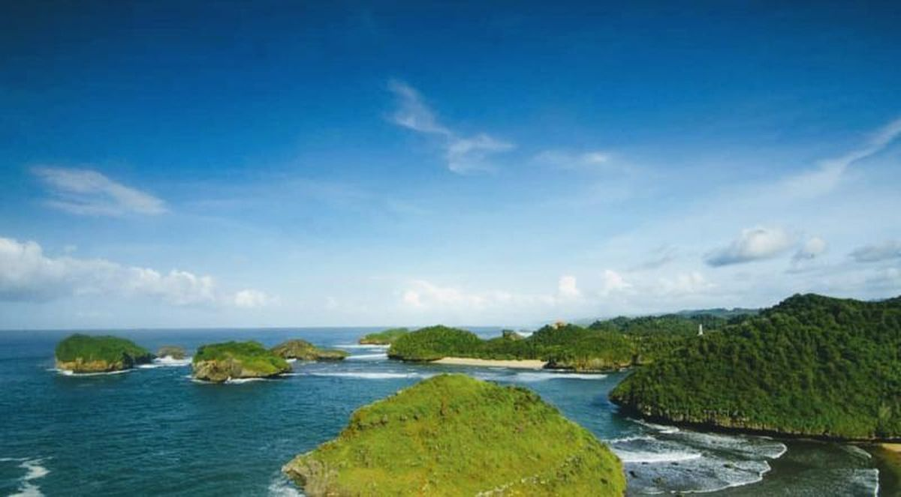

Pantai Kasap
Ditulis Oleh Arya Shanda C. A

Banyak yang belum tahu bahwa di kawasan wisata Desa Watukarung, Pacitan merupakan satu satunya tempat yang menyajikan 10 tempat wisata pantai dan 1 wisata sungai, hal ini menjadi keunikan tersendiri dari wisata tersebut.
Termasuk yang belum banyak diketahui adalah Pantai Kasap. Katanya pantai ini mirip dengan Raja Ampat di Papua, sehingga dijuluki Raja Ampatnya Pacitan. Daya tarik Pantai Kasap bukan dari pasir putih dengan ombak yang merayu-rayu, melainkan pemandangan bukit bukit dan hamparan laut samudera Hindia yang luas.
Termasuk penampakan sunset yang indah, kini Kasap menjadi salah satu spot terbaik untuk menikmati keindahan matahari tenggelam diufuk cakrawala, mempesona, tidak kalah menakjubkan karena penampakan sunset berbeda dengan lokasi lain.
Di tempat tersebut disediakan gardu pandang yang berada di atas bukit. “Kami berkomitmen memberikan pelayanan terbaik kepada pengunjung yang ingin memanjakan mata menikmati keindahan Kasap. Disini juga bisa diguanakan ,untuk Camping” Kata Ari Setiwan petugas Pantai Kasap 14/7/19. Kasap tak selalu ramai dikunjungi, utamanaya di waktu sore, sebelum matahari tenggelam. Dan saat libur panjang dihari besar dan libur sekolah, pernah juga di Bukit Kasab yang sempit tersebut dimasuki 1000 wisatawan. Beruntung lokasi Kasap meskipun sempit namun memiliki tempat terbuka, sehingga tetap ,nyaman bagi pengunjung.
Seperti halnya Hudha, wisatawan dari Yogyakarta ini nekat ke Kasab bersama rimbongan hkarena begitu penasaran menyaksikan eloknya Sunset yang ia lihat di Sosmed. “Saya suka dengan sunset, dan hari ini saya coba untuk menikmati sunset di pacitan bersama-sama teman,” tuturnya. Pantai Kasab berada di Desa Watukarung, Kecamatan Pringkuku, 30 Kilometer dari Pusat Kota Pacitan, berada di sebelah timur Pantai Watukarung dan wisata sungai Kali Cokel.